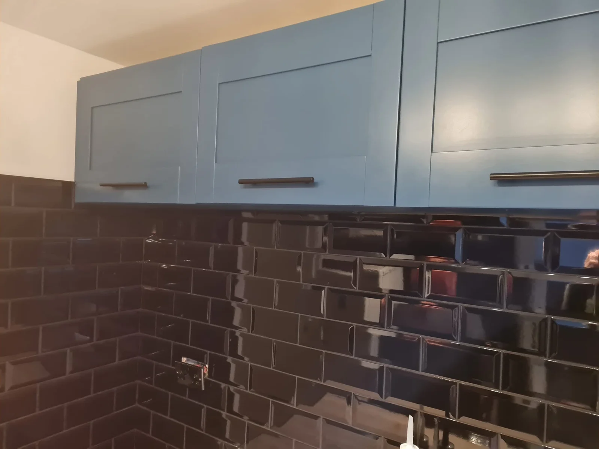
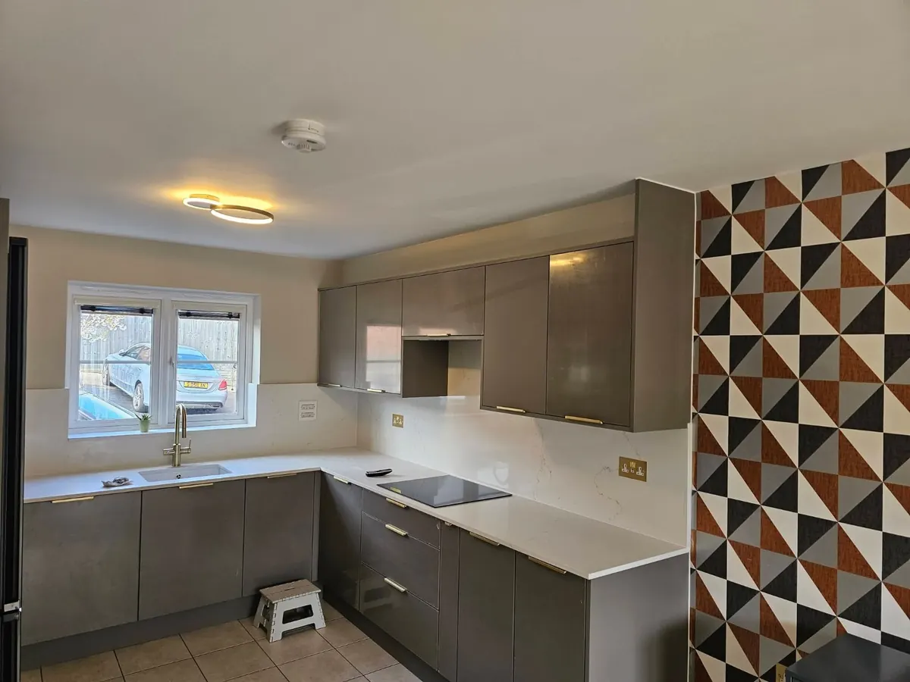
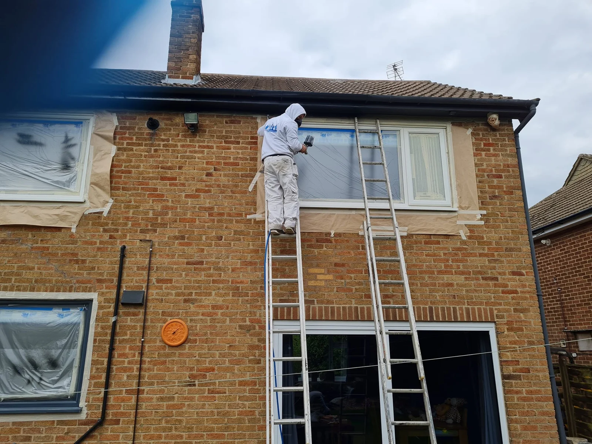

Kitchen, uPVC & Surface Spraying
Happy with your kitchen, but ready for a different colour? Or is the uPVC outside starting to look tired? We spray kitchen cupboards, cabinets, uPVC and other suitable surfaces to give what you already have a fresh finish. Based in Leicestershire, we consider projects within around 50 miles of Leicester.
Request a quote →
Kitchen & cupboard respraying
A new colour. The kitchen you already know.
If your cupboards are still doing their job, a new finish could be all they need. We discuss the colour and finish you want, then check the material and condition before recommending how to proceed.
- Kitchen cupboard doors and drawer fronts
- Other cupboards and cabinets, subject to suitability
- Colour and finish choices to suit your space
Just the finish, or a bigger change?
Respraying changes the look of existing cabinetry. If you also need installation, tiling, plumbing or joinery, tell us about the whole job.
Explore kitchen refurbishment →

uPVC & other surfaces
Freshen up the surfaces around your home.
A change of finish can make a difference to the outside of a property as well as the rooms within it. We offer uPVC, interior and exterior spraying, including airless spraying where it suits the job.
- Suitable uPVC windows and doors
- Interior and exterior surfaces
- Airless spraying where appropriate
The material, previous coatings, surface condition and access all matter. Send a few photos and tell us what you would like to change so we can discuss the options.
Before we start
Good preparation comes before a new finish.
We’ll discuss the existing surface, any damage or peeling, the preparation needed and the finish you have in mind. The method and any removal of doors or other components are agreed for your particular project.
Your spraying questions.
Can every cupboard or uPVC surface be sprayed?
No. We need to check the material, condition and any existing coating. Let us know about peeling, damage or previous repairs when you enquire.
Can you spray cupboards and uPVC as part of the same project?
Yes, you can enquire about both together. Tell us which items need work; each surface will be checked for suitability and the scope agreed before work starts.
Are kitchen doors removed or sprayed on site?
That depends on the project. We’ll discuss how the work will be carried out, including any removal of components and the protection needed around the work.
What colours and finishes can I choose?
Tell us the colour and look you want. We’ll discuss the options available for the particular material and surface.
Is airless spraying right for every job?
No. The method depends on the surface, setting and finish required. Traditional brush and roller decorating is also available.
Related services